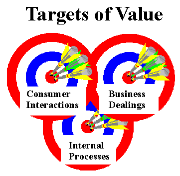
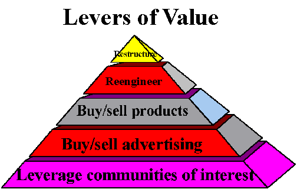
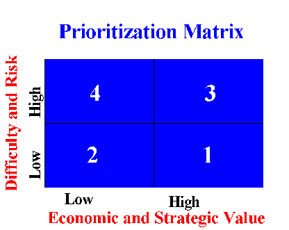
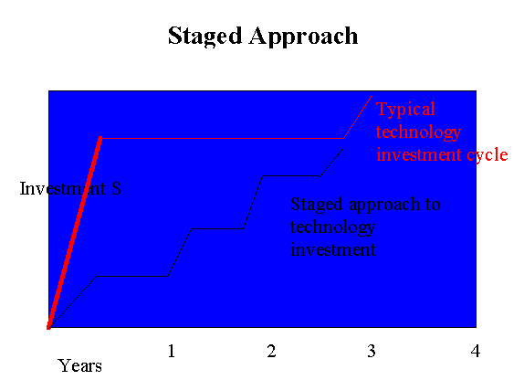

|
| ||
|
| ||
Microsoft Corporation
September 1996
Contents
Introduction
What Is Unique about the Marketspace?
How Can You Create Value in the Marketspace?
Building Communities of Interest
Advertising Your Marketspace
Selling Advertising
Selling Products
Buying products
Reengineering Key Processes
Restructuring the Game
Summary
What Are Some Practical Guidelines to Follow?
Note The names of companies, products, people, characters, and/or data mentioned herein are fictitious and are in no way intended to represent any real individual, company, product, or event, unless otherwise noted.
The information contained in this document represents the current view of Microsoft Corporation on the issues discussed as of the date of publication. Because Microsoft must respond to changing market conditions, it should not be interpreted to be a commitment on the part of Microsoft, and Microsoft cannot guarantee the accuracy of any information presented after the date of publication.
This document is for informational purposes only. Microsoft makes no warranties, express or implied, in this document.
Everyone is rushing to participate in the new "marketspace" formed by the World Wide Web and online services. It is a new and exciting way of doing business and, like every other means of doing business, will benefit those who adopt the right strategies and execute them well.
This paper provides ideas and suggestions to help you plan as a marketspace entrepreneur and manager. While you also need to thoroughly understand issues related to technology and design to be successful running a cyberbusiness, this paper will focus on broad business issues relating to the marketspace. It is intended for managers of startup companies as well as existing companies that are trying to extend their efforts to the marketspace.
In this paper, we will discuss three issues that we feel are essential to explore:
Let's set aside all the hype about the marketspace for a moment. There are four fundamental elements that are truly unique to the marketspace:
Marketspace is a new type of medium. The marketspace, which is quickly becoming the convergence of the Internet and online services and may eventually include CD-ROMs, ATM machines, stand-alone kiosks, corporate data networks, and television; is an interactive, customizable, two-way, multimedia, and global medium. In a sense, the marketspace is a combination worldwide newspaper and global interconnected computer. In a few years, it could be the combination of worldwide television and the global computer.
You need to understand these characteristics in order to maximize the value you can extract from this new medium. For instance, the marketspace will allow you to provide richer publishing than traditional mediums, customize your offerings to individual users, and interact directly with individuals. You need to cast away traditional mass-media thinking and move toward customized medium concepts, reexamine traditional media cycle time and move toward instant publishing, and move from one-way communications to two-way, interactive communications.
Marketspace is the great equalizer. The marketspace is independent of geography, time, and scale. Because marketspace information production and publication costs are relatively low and because distribution is instantaneous and global, the marketspace will allow small companies (and even individuals) the same access to consumers and suppliers that only large companies have enjoyed until now.
In this sense, the marketspace will become the "great equalizer." For small companies, this is an unprecedented opportunity to level the playing field. The implications for large and small businesses alike is that increasingly, the key to winning the marketspace battle will not so much be the traditional ideas of economies of scale and scope, but providing more value to consumers of brands, products, services, and content.
Marketspace provides a new distribution channel. The marketspace provides an entirely new distribution channel of which your business can take advantage. Specifically, the two key opportunities are for direct data and information transmission and direct marketing of goods and services. The marketspace will allow your business to exchange information very inexpensively with a very large number of people as well as enable you to become a worldwide direct marketer.
This distribution channel differs significantly from others for two reasons: first, it is an "intelligent channel" that can easily be utilized to augment the traditional distribution function with information gathering and dissemination, automated customer service, and many other value-added services. The marketspace is much more than a pipeline to the customer's home; it is a pipeline to the customers themselves. Second, this distribution channel has virtually no variable costs.
Marketspace will fuel unprecedented growth. The marketspace is becoming a unique one-stop shopping concept for information and people. This scope is attractive because it creates network externalities, that is, it becomes more powerful and valuable (to users, advertisers, and marketers) as more people and services join the community, just as the phone system becomes more valuable when more people can be reached.
The implication for businesses is that the marketspace will represent, at least in the medium term, an exponential opportunity. While the early developments have been and will continue to be slow, the size of the marketplace will grow rapidly and fuel its own growth. As such, businesses that can get an early lead in this marketspace should reap exponential rewards in the future.
To achieve this exponential growth, every marketspace business should focus on creating network externalities in its corner of the marketspace. What we mean is that you should find ways to create communities of interest around your area of the marketspace and to create mutually beneficial relationships within those communities.
The key message we want to convey in this section is two-fold. First, the marketspace is in many ways similar to the traditional marketplace: to be successful, you need to have a value proposition that is attractive to your target market; you need to provide value superior to your competition's; and you need to keep innovating to stay ahead of the curve. These fundamental principles of business have not changed -- the marketspace will not make money for you, and without solid business thinking you will not succeed.
Suggestion #1. When entering into a marketspace business, take the time to do key traditional business analyses. Write a vision statement and a positioning statement. Do a competitive analysis, customer analysis, channel analysis, and company analysis as well as a typical marketing analysis. Remember, the marketspace is not going to make money for you. You can use the marketspace to make money but you need to have the right business strategy and need to execute it better than everyone else in order to succeed.
The second key point is that it is important for you to understand the uniqueness of the marketspace, because you need to adapt your business thinking and your internal processes to fit the marketspace, and because you would leave most of the value of the marketspace on the table if you did not take advantage of its unique capabilities.
Suggestion #2. Do not rely only on traditional business thinking. The marketspace has attributes that are unique to it. Think carefully about how you can leverage the key components of the marketspace to add value: rich content publishing, interactive applications, personalized delivery of content, rapid publication cycle, 24-hour-a-day service, global reach, intelligent low-cost distribution channel, direct link to consumers, and so on.
In this section, we will discuss in more detail what types of value levers are available to you in the marketspace. Of course this can never be an exhaustive list; it is meant to stimulate your thinking. The marketspace is a new phenomena and there are few absolute answers as to what will and will not work. However, we would like to offer a systematic way for you to think about the different opportunities offered by the marketspace and help guide you in what we hope is the right direction for your business.
There are three main targets of value for your marketspace efforts: consumer interactions, internal processes and business dealings. Consumer interactions include every aspect of your business that eventually reaches consumers and thus impacts your reputation and brand equity. Business dealings represent all different forms of interactions with other organizations such as your suppliers, governments, business associations, and so on. Internal processes are the communications, tracking, and coordination mechanisms you use to run your business.
We think it is important to separate the targets of value into three categories because the key success factors required in each target are significantly different. For any marketspace project that affects your consumer interactions, you must carefully evaluate the impact on brand equity, consumer satisfaction, and public perceptions; marketspace projects that alter your business dealings must be absolutely fault-proof, secure, and efficient; while marketspace projects that improve your internal processes must be well-coordinated, inexpensive, and easily customizable.
Suggestion #3. Separate your Cyberbusiness plan into the three different targets of value and carefully think through the value elements, key success factors, and action plans for each target.

Figure 1. Targets of value
There are many different levers of value or methods to create economic returns applicable to each of these three Targets of Value. These levers include leveraging communities of interest, buying/selling advertising, buying/selling products and services, reengineering processes, and restructuring an industry.

Figure 2. Levers of value
Suggestion #4. When you examine the three possible Targets of Value, a useful way to examine them is through Levers of Value such as leveraging communities of interest, buying/selling advertising, buying/selling products, reengineering processes, and restructuring an industry.
While there is no "right way" to approach these different Levers of Value, we have depicted them as a pyramid because we believe there are some Levers of Value that are more fundamental or more basic than others. For instance, you need to learn to create and leverage communities of interest before you can sell advertising or products and before you try to restructure an industry. Therefore, these Levers of Value do suggest a timeline by which you might want to approach your marketspace strategy.
Suggestion #5. Consider experimenting with the more "simple" or "well-understood" Levers of Value such as building communities of interest and selling advertising before you take the plunge to more complex endeavors.
To better understand this concept of Targets of Value and Levers of Value, take a look at the table below that contains some examples. Many of these examples will be explained in more detail in the remainder of this paper.
Consumer interactions |
Business dealings |
Internal processes | |
Leveraging communities of interest |
Market research
Customer service Prospect acquisition Product design |
Competitive research
Press relations Government lobbying Industry associations |
Legal research
Internal brainstorming Centers of competency Internal publishing |
Buy and sell products |
Marketspace shopping
Online publishing Online auctions |
EDI
Automatic reordering Online bidding |
Cost center management
Centralized purchasing |
Buy and sell advertising |
Multimedia advertising
Dynamic advertising Tailored advertising |
Supplier advertising
Press advertising |
Local restaurant advertising on your internal network |
Reengineer processes |
Invoicing process
Sales process Relationship marketing |
Advertising process
PR Process Government controls |
Internal communications
Sales force productivity The "intranet" |
Restructure |
Online shopping mall
Comparison shopping Tailored search engines |
Online buying mall
Comparison buying Disintermediation |
The librarian
The Intelligent agent |
Figure 3. The marketspace value matrix
The key point to retain is that every area of your company can benefit from the marketspace by generating incremental revenues, cutting costs, or improving productivity. Therefore, every function of your company should have a marketspace strategy to take full advantage of the marketspace opportunity.
Suggestion #6. The marketspace can create value for your company in every business function you perform, from public relations to recruiting to purchasing. Your company therefore needs to look at everything it does and create a marketspace strategy for each key business process.
Let's use an example to illustrate some of these value levers:
Company XYZ manufactures camping and hiking equipment and is just beginning to use the marketspace to conduct business. XYZ will start this journey slowly by simply becoming a part of Internet newsgroups and online areas that fit its business.
XYZ first listens in on the conversations users are having in different areas of the marketspace to get feedback about people's interests, complaints, and wish lists. Eventually, it gets more ambitious and posts questions about some of its products and some competitor offerings. It then invites people to e-mail their comments and suggestions directly to them, offering free products to the best idea received every month. XYZ now receives more than 100 pieces of mail a week from current and potential customers. This mail includes demographic, psychographic, and interest information people provide in order to enter the contest.
Suggestion #7. An advantage of the marketspace is that it can help you easily target the right "communities of interest." Think carefully about which communities of interest you want to interact with, what their needs are, and how you can best interact with them in order to achieve your goal in the marketspace.
Suggestion #8. Take advantage of the thousands of existing communities of interest. There is no need to start from scratch when you can leverage existing sources.
XYZ uses the information in many ways: first, product design receives all the new customer ideas and conducts more market research in the newsgroups and chat rooms (and some live focus groups) to determine new product features.
Marketing people can also get the e-mail addresses and accompanying demographic information. Using that information, they can send potential and current customers information about upcoming products, product offers, and other value-added services for users. This information is of course tailored to the user's demographics and interests to increase its relevance. Further, this information is combined with the global marketing database, which contains demographic, psychographic, interest, and product purchasing information about current and potential customers.
Strategy people can receive any information relating to competitive offerings and competitor strategies that can be gathered through postings, user comments, and online chats.
Lastly, the information is passed along to Human Resources staff who incorporate it into the potential candidates database. HR managers can send resume requests to potential candidates through bulk e-mail. Successful candidates are then asked to submit to an online questionnaire and/or an online interview. Only then would a live interview be conducted.
Let's recap: So far, XYZ has created some value for itself by conducting market research, creating stronger relationships with potential and existing customers, and hiring more effectively and efficiently. The two basic opportunities illustrated are: XYZ has leveraged existing communities of interest that mirror its products and services and it has already understood the power of integrating its marketspace strategy within many divisions in its organization.
Suggestion #9. Your business function marketspace strategies need to be well integrated into a coordinated corporate marketspace strategy in order to maximize the value you can create using the marketspace.
Let's continue with our example: XYZ has been fairly successful in its early marketspace incursion and has decided to expand. XYZ has decided to put up its own area in marketspace; in this case it has decided to put up its own Web page. The early goals for the Web page are to create a community of interest around XYZ products and leverage that community to expand the early efforts at market research and customer information acquisition. Basically, XYZ is trying to shift people from a generic "camping/outdoors community of interest" to their branded "XYZ community of interest."
The best way to do this is to provide value-added services to attract the relevant communities of interest. Using the market research it has been doing online, XYZ knows that the key interests in the "camping community" are: suggestions and descriptions of camping locations, up-to-date camping conditions, and equipment recommendations. XYZ therefore builds those services into its Web site, not necessarily because it will help to generate revenues (especially early on), but because it will attract the right community of interest to its site.
XYZ has built a marketspace area that provides users with value-added services such as top camping sites by region, including pictures, descriptions, road directions, costs, best time to go, other things to do around the region, and so on; daily weather reports for each of those regions, including a weather map and weather warnings; and suggestions for equipment best suited for the camping site selected.
Suggestion #10. The first thing you should concentrate on when building your own area of the marketspace is to attract the largest number of loyal people from communities of interest that are of interest to you, such as your target customers, key suppliers, business partners, the media, and so forth. The key to attracting these different communities of interest is to understand their marketspace needs well and cater to those needs in a fashion that provides more value to them than other marketspace or non-marketspace alternatives.
Instead of having a typical click-here-until-you-get-what-you-want interface, XYZ's site has a personal guide approach: The user indicates preferences for region, type of camping (climbing, relaxing, fishing, and so on), and time of year, and it comes back with a list of suggestions that can then be explored in more depth.
Another example of this value-added concept is the idea of an online cookbook. This cookbook should not simply be a glorified list of recipes; an online cookbook should add value beyond a traditional cookbook. For example, this cookbook would ask questions about an event such as the type of event (birthday, romantic, formal dinner party), number of people, and time of year, and would then list appropriate suggestions for the event.
Once the user has selected a menu, the application would print all the recipes, prepare a day and evening planner (when to start what), prepare a grocery shopping list, print invitation cards and addressed envelopes for all the guests (or could contact them by e-mail), and offer aperitif and wine suggestions. The online medium allows you to combine the power of publishing with the flexibility and customizability of computing. Take advantage of it -- your customers will thank you for it!
This value-added approach has helped XYZ gather a large and faithful electronic community of outdoor enthusiasts. However, XYZ has not really created economic value for itself because it has until now offered this service to users for free. A key question XYZ must answer eventually is: Should it charge a fee for this service (either a flat-fee subscription rate or a variable usage fee)? Two factors would push XYZ to start charging users for its service:
On the other hand, XYZ needs to realize that charging for its content will likely reduce the size of its community of interest and thus reduce the value of its advertising and the size of its market for products.
Suggestion #11. Charging for value-added content will provide extra revenues and protect your non-marketspace offerings. However, it is likely to reduce your advertising and product sales revenues. You need to find the appropriate mix for your business.
Let's recap again: The value XYZ has created so far is hard to quantify but is substantial: XYZ now has a list of 100,000 potential customers it can target to sell products to; it has added 100 people to its list of "desirable employees" and is actively recruiting them; it has been able to include over 500 customer suggestions into the design of its products; and it has amassed a wealth of information on what its competition is doing. Not bad so far. But this is just a beginning.
The next step for XYZ is to broaden the appeal of its online marketspace to a larger customer community. Its goal is to double the number of people that access its site within the next six months. To do so, it begins heavily promoting its marketspace area by:
XYZ wants to know the results of this marketing effort for two reasons: to improve its future marketing efforts and to be able to provide quality information to potential advertisers on its marketspace area.
Suggestion #12. It is important that you carefully track customer usage of your marketspace to improve your own marketing efforts and provide accurate numbers for potential advertisers and other partners. One way to measure this, of course, is to find out the number of people who visit your site. A better way, we believe, is to find out how many people have visited your marketspace at least 3 times in the last 6 months (or some other measure of customer loyalty).
Suggestion #13. To build loyalty in your community of interest:
- Add value to your target communities of interest
- Change your content frequently
- Include "series-type" content (for example, create an online soap opera users have to access every week to stay current with the story)
- Accumulate cyber-points for frequent users
- Run special promotions/contests online
- Encourage users to interact with each other through moderated chats/BBS
- Be creative and unpredictable
- Use other media to advertise your site
- Use e-mail to draw existing members back to your site
- Create "network externalities" between the members of your communities of interest, that is, create mutually beneficial dependencies between your members and you and between members themselves.
XYZ's marketing efforts have paid dividends: Its community of users is now up to 250,000 with more than 175,000 of those users accessing the service as least once a month.
Now that XYZ has created a sizable community of interest, it wants to find out how to leverage it more effectively. The first step it takes is to sell advertising on its area. XYZ has no experience doing this (it is used to buying advertising, not selling it!) so it doesn't know where to start. The key questions it asks itself are:
To whom do I sell advertising? One of the great value-added features of the marketspace is the ability to target specific communities of interest. For example, if XYZ wants to advertise to bird-watching enthusiasts in the marketspace, it needs to find a bird-watching area in which to place ads. XYZ needs to understand the demographics and psychographics of its community of interest very well and target potential advertisers with similar audiences. The more similar the audience, the more valuable the advertising is to the advertiser.
XYZ could have reversed this thinking and first understood what types of advertisers it wanted to go after. Knowing this, it could then have crafted value-added content to attract communities of interest that are desirable to these types of advertisers. Where you start depends on where you think the bulk of the value comes from. If you think you will make most of your money through delivery of your branded content, products, and services, use the former method. However, if you believe advertising will provide you with the bulk of your revenues, consider crafting content that will appeal most to your advertising targets.
Also, don't forget that you can put advertising anywhere in your marketspace. For example, consider selling advertising to local restaurants in areas of your marketspace that are available only to your employees (your internal network). You could also consider selling advertising to your supplier's suppliers on your purchasing marketspace; selling advertising to journalists on your press relations marketspace; or selling advertising to the tenants of your marketspace mall.
Where do I put the advertising? XYZ should place the advertising in the most appropriate places in its marketspace. For example, bird-watching trips should be in the bird-watching camping trip information area; kayak and canoe manufacturers should be in the river expeditions area. The more closely matched the advertising is to the content, the better. As such, XYZ is not only a seller of advertising; it also performs the service of intelligent advertising editing for its advertisers.
What types of advertising are there? XYZ can create many different types of advertising: in its BBS, billboards, "hot panels", yellow pages, special promotions, and sponsored areas. BBS advertising is comprised of promotional text messages in a BBS and can be either corporate advertising or classified ad-type advertising. Advertising billboards are simply "static" (not linked) branded advertisements, either graphics, animation, or full-motion video. "Hot Panels" are billboards that link the user directly to the product/service being advertised. Yellow pages are directories of services that can be searched by the user and are thus hidden until requested by the user. Be creative; there are endless possibilities.
How much advertising should I put in my marketspace? There are no set formulas for determining the optimal amount of advertising. For "content advertising", that is, advertising not requested by the user but embedded in the content areas, advertising should be as unobtrusive as possible. Current estimates range from somewhere between 5% and 15% of the area of the page. This number can be higher if the advertisement is well-designed and does not interfere with the content. The number will be higher the more relevant the advertising is to the content displayed. For example, an ad for a canoe-maker placed in an article about buying canoes can be larger and will look less intrusive than the same ad in an article about canoeing in Oregon (it's a subtle but important distinction).
It is crucial that you master this mix of advertising and content appropriately and that the advertising you bring to your marketspace adds value to your customers. You want to avoid falling into the trap of advertising overload, which will diminish the value of your content (and then diminish the value of your advertising as your community of interest shrinks).
In the areas where advertising is expected (such as when the user selects yellow pages or purchasing suggestions), advertising can have a much larger presence. The important point here is that, unlike a traditional medium that has a limit on the ratio of advertising to content, there is no such limit in the marketspace. In theory, XYZ can sell as much advertising space as it wants to because it is not bound by physical limitations of magazine packaging or TV/radio's time linearity.
However, it is important to note that advertisers will be willing to pay more if their advertising is easier to find. Therefore, there are some practical limitations to advertising revenues, not from the customer experience point-of-view, but from the value to advertisers. Arguably, there can be some optimal point at which XYZ can maximize its advertising revenues. For instance, if XYZ's area of the marketspace contains so much advertising that it becomes difficult to find a particular advertiser's message, the value of each ad placed on their service might diminish. The chart below outlines such a scenario and shows there might be a point at which total advertising revenues are optimized. However, as search tools and other technological facilities improve, this limitation should disappear.
Figure 4. How much advertising to sell?
What kind of revenue models can I use? There are many ways to get advertisers to pay for advertising. One is to ask for a flat monthly fee, to be renegotiated periodically. Another is to charge only when the content page containing the advertisement is displayed. Yet another is to charge only when users actually link to the advertiser's area. You can charge people for different "prominence" levels, such as a bigger yellow page or easier-to-find ads. Lastly, you can have a lot of flexibility over the time exposure of the advertising, which you can quite easily change daily. Of course, all combinations of the above are possible.
How much do I charge for this? Rates can vary widely because the market for marketspace advertising is in its infancy. However, the market will become more efficient and pricing structures will emerge. In the meantime, a good way to think about the pricing structure is to compare it to traditional print media advertising on a reach basis. For example, XYZ currently pays $25,000 for a 1/8 page ad in a monthly magazine with a circulation of 500,000 people. The cost per person reached is thus $25,000/500,000 which is $0.05 per person. This figure could represent a starting point for negotiations when offering advertisers a similar "prominence" ad. XYZ could thus charge $8,750 for such an ad (175,000 users x $0.05 per user reached is $8,750). Because marketspace advertising can be made more "valuable" than standard print advertising, value per reach of marketspace advertising should eventually surpass that of other media. Of course, the value of a marketspace ad depends largely on the prominence of the ad and the type of ad as described previously. Popular World Wide Web areas are already charging substantial advertising fees.
What else can I do to add value to my advertising? The marketspace can provide much easier access to marketing information than traditional media can. For example, you can easily gather a lot of usage information about people in your community of interest and share that information with your advertising partners (and others interested in buying targeted lists of users). Make sure you are aware of and follow all the legal restrictions related to privacy of information because they will be applied to the marketspace.
Also, you could do "selective real-time advertising." This type of advertising would select the most appropriate pieces of advertising most closely matching the user's profile. For example, advertising for hiking boots in the hiking section of XYZ should be for women's boots if a woman is using the service and for men's if a man is using the service. The possibility to match the advertising to fit the profile of the user ensures a higher relevancy.
Lastly, you should work very hard to provide results to your advertisers. For example, you should have monthly reports sent online to all your advertising partners containing absolute and trend reach numbers, cost per reach, hot links, $/hot links, browse to hot link conversion rate (% people who click on hot links as % people who see it), and any other relevant information.
Suggestion #14. Advertising in the marketspace is a business in its infancy. There are few answers yet. The best advice we can offer is for you to work very closely with your advertising partners, track their results compared to other alternatives they have, and readjust quickly to the realities of the emerging marketplace.
Of course, a key advertiser in your marketspace should be your company! That is, you should use your area of the marketspace to advertise and sell your products and services and to run special promotions. The size of the marketspace product sales industry is estimated to grow rapidly and reach approximately $4 billion by the turn of the century. Although this is a very small number in relation to total retail sales, it is important to note that the forecasts predict exponential growth.
Many books have been written on how to best use the marketspace to sell your products. In this section, we will try to give you a high-level view and high-level suggestions on practices to sell your products and services.
Marketing through cyberspace can provide several key value levers:
Provide incremental sales. Marketing in the marketspace can help boost total demand for your products and services because it can help you reach customers who otherwise would not have bought from you. This is especially true for businesses who, because of lack of size and/or market pull, have not had much exposure from retailers. In this case, the marketspace again will act as the great equalizer because there are no restrictions on "shelf" space in this new medium. Also, the marketspace will allow you to reach a global audience, 24 hours a day, 7 days a week with a consistent quality shopping experience.
Of course, a large portion of your online sales might eventually cannibalize your offline sales, simply because consumers have a fixed budget they can spend on goods and services. The benefits for your company of this transition to online buying are less obvious than in the case of incremental sales. Therefore, it is important to carefully analyze your profit margins for both your online and offline sales to target the appropriate retail channel mix for your company.
Promote cross-selling and up-selling. One key advantage the marketspace holds over the marketplace is the ability to add value to your bottom line through very effective cross-selling and up-selling. When you build a shopping application, you should include automatic cross-selling and up-selling mechanisms.
Push inventories out. The marketspace will allow you to more easily implement an ordering system where your company can build, assemble, or acquire inventory after an order has been placed. This would lower inventory carrying and obsolescence costs.
Disintermediate. One of the key values you can capture from the marketspace is the ability to "disintermediate" or to shrink your distribution chain. The marketspace can enable marketers to capture more of that value.
Think of selling products on the marketspace as being a customized direct catalog marketer. The key difference is that the marketspace and catalogs have vastly different cost structures: catalogs have reasonably small fixed costs and relatively high variable costs while the marketspace has medium fixed development costs but virtually no variable costs. As the marketspace community continues to grow, marketspace direct marketing will be substantially cheaper than traditional print catalog marketing.
Furthermore, the ability to disintermediate has significant implications for customer ownership. As your company gets closer to the customer by reducing its distribution chain, it begins to take more control (and responsibility) for customer loyalty. Your company will depend less and less on the channel to maintain good relations with customers and thus will need to develop competencies in this area to increase customer loyalty.
There are significant issues related to disintermediation:
At the same time, it is inevitable that companies with little presence in your industry, precisely because they have received little channel support in the past, will emerge using the marketspace as a channel.
Keeping separate and accurate P&L statements for your marketplace and marketspace businesses will allow you to quickly decide which is more profitable, and therefore what the optimal mix for your business should be.
Suggestion #15. Keeping separate P&L statements and cost accounting processes will allow you to quickly judge the profitability and desirability of marketplace versus marketspace.
Suggestion #16. If you have an existing marketplace position you want to protect, consider pricing your marketspace goods as close to price parity as possible with your marketplace goods.
Here are some key suggestions you should follow to capture as much of the value from selling products, services, and information as possible:
Provide more value than the alternative. Not only should your product or service beat the marketspace competition, it should be better than the non-marketspace alternative. For example, consumers have no strong incentive (after the novelty wears off) to use the marketspace to find their credit card balance if they can find it in 30 seconds by making a phone call and entering their card information. In this case, the phone is easier to use to perform the same service. However, if the credit card company offers the possibility to quickly examine transactions made in the past or sort the bill in many interesting ways, which the user cannot easily do on the phone, then the service becomes truly superior.
Personalize the shopping experience. You can obtain the demographic characteristics and interests of the user shopping in your marketspace. We recommend that you use that knowledge to create a service that's personalized as possible. For example, XYZ has created a shopping service that greets you by name, with your favorite color schemes and your selected look and feel. Then it displays types of items similar to what you have purchased in the past and provides you with the latest product reviews in your favorite categories. The trick is not only to personalize the experience for the user (a male shopper should not have to scroll through women's apparel to get to where he wants), but to let the user know in a subtle way that you are making the effort to personalize the shopping experience for them (for example, XYZ's shopping platform announces, "You have entered the XYZ mall created especially for you, Mr. Smith.").
Customize your products and services. Because the marketspace easily allows consumers to state their product preferences directly to you, this will enable you to more easily tailor your products to fit individual customer needs. For example, reports and software delivered through the marketspace should be tailored to fit the customer's needs. Physical goods such as jeans obviously require very advanced manufacturing facilities to fulfill customized ordering.
Provide value-added services. There are many things you can do in the marketspace that add a lot of value for the customer and will keep them coming back. For example, a grocery-shopping environment should allow customers to arrange products in many different ways: by grams of fat per serving, calorie per serving, cost per ounce, or most popular item.
Suggestion #17. The best way to attract consumers into a marketspace shopping environment is to offer them value-added services that they cannot get in the traditional marketplace. Look for things that can be uniquely done in the marketspace (go back to the four unique things about the marketspace).
Provide trial. The marketspace makes it easy to provide trial of information-based products such as reports and software. For example, you should enable customers to see the summary of a $100 report before you ask them to purchase the report. Similarly, software vendors can easily provide demos of their software. For "hard" goods providers, offer services similar to what catalog shopping services offer, such as excellent product return policies and extended warranties.
Provide referral services. If you have no products that can easily be cross-sold with a purchased item, cross-sell somebody else's product instead and charge that company an advertising fee for that service.
Use as a physical distribution channel. The marketspace can be a great medium to offer goods such as coupons, special offers, or concert tickets.
The marketspace will soon make it possible and simple for small- and medium-size businesses to buy products online either through a shopping metaphor or through an EDI metaphor because open systems such as the Internet will make online purchasing available to a much broader set of companies at lower costs and with broadly-accepted standards.
Suggestion #19. Small and medium-size businesses should investigate the possibility of using the marketspace to buy their products. Work with your key suppliers to build awareness and understanding of the benefits of such an arrangement.
There are many books you can read on purchasing online and we will not try to cover this subject in detail in this paper. However, we would like to elaborate on the key value levers associated with online buying to help you decide which ones are of interest to you:
Suggestion #20. Try to create a "comparison shopping" environment for your non-critical purchases by signing up many competing suppliers to your marketspace purchasing system. That way, you can compare prices very easily (even automatically) from suppliers around the world and drive the price of your supplies down. You could even create a flexible buying system where you have no long-term contracts with any supplier and always pick from the supplier with the best price on any given day. This type of system is most applicable to non-critical supplies.
Suggestion #21. For critical supplies, use online buying to create closer working ties with your suppliers and work together to remove costs in the total business process.
Suggestion #22. An online purchasing system can do much more than just help you buy supplies. It should help you track usage, calculate optimal order quantities, track inventory, reorder supplies automatically, and interact with your accounting and billing systems. It is up to you to decide the level of value added (and associated cost of course) you require.
Use of the marketspace will also allow you to easily and inexpensively reengineer key business processes. Of course, this capability is not unique to the marketspace because you can also use closed-systems solutions or even outsource some of your computing needs to reengineer some key business processes. However, these solutions can have significant drawbacks such as high cost, high technology risk, and low portability. Using an open system such as the Internet can alleviate these drawbacks.
How can you reengineer key processes?
The idea of reengineering is simple: You streamline communications, coordination, and work processes to cut costs, improve quality, and/or improve timeliness. The marketspace will allow you to easily and inexpensively create new communications, coordination, and work processes, in at least three ways:
Enhance your internal communications. For medium-sized companies and loose organizations of people (a charitable organization, community action group, or university) communications and coordination can be a problem, because of high cost or lack of central coordination. Using the emerging marketspace, these types of communities of people will be able to replicate the sophisticated communications structure of larger organizations cheaply and easily. Think of this as simply creating communities of interest inside your organization and creating an infrastructure -- a "virtual organization" -- that allows them to meet in the marketspace.
For example, how can a university cheaply and effectively connect students, professors, alumni, staff, and all of its information into one virtual organization? This is a difficult challenge because students are constantly changing and alumni are spread across the world. An elegant solution to link all these people together would be to use the Web as a communication platform. The Web is a global network that can easily be customized to fit the university's needs. It can include private areas available to certain people as well as public areas available to everyone.
The potential savings to the university of having students apply online, register online, apply for jobs online, receive newsletters online, and donate money online can be significant. This virtual organization metaphor can allow the university to reengineer every process it performs into one open platform. This would add a lot of value for students and drastically reduce costs for the university. Furthermore, a large portion of the costs of this type of system could be shouldered by the individuals (students and alumni) and not the university.
Suggestion #23. Organizations can leverage the marketspace to create a virtual organization cheaply and effectively. This is useful for organizations that:
- Can't afford or don't need dedicated closed systems solutions.
- Want to push the cost of access of the virtual organization to the individual users.
- Already have a marketspace presence and want to extend it (for very little additional cost) to help them run their business better.
Tap the world's resources. The marketspace will allow organizations (big and small, loosely or tightly coordinated) to extend their internal networks to be able to tap the power of the world's resources. There are three main Levers of Value associated with this:
Going back to the university example: Now that every student and professor (and most alumni) are connected through the marketspace, it allows them to access all of the marketspace through the same platform and same interface. Without having to learn anything new, the university community can do research online, publish papers around the world, and access all sorts of different information providers that until now required separate dedicated systems.
One of the key value-added aspects of the marketspace is the fact that you can leverage it to reengineer your internal business processes and use it to allow the world to tap into those resources at the same time. For example, not only can the university use the marketspace to provide information about its courses to students, but it can also provide access to this information (at a different level of detail and/or functionality if it so chooses) to anyone in the world. The ability to leverage content both internally and externally through one platform can allow your company to easily publish information intended for audiences ranging from one person (say, the CEO's information platform) to many millions (your home page) using the same process.
In effect, the marketspace allows you to leverage content to any level of customization you choose.
Create your own world of resources. The marketspace allows you to tap into the world's resources -- and create your own world of resources. You can do this by standardizing and customizing those resources. Standardization can allow people in your organizations to easily communicate ideas, requests, and information across functions and geographic boundaries while customization can allow your company to create information tailored to the needs of every person inside and outside of your organization.
For example, standardization of your marketspace would be an area available to all your employees with standard document formats for major business purposes (such as hiring requests, new business proposals, break-even analyses, and project tracking and updating); an area for your customers with standard feedback forms, service requests, billing inquiries; and an area for the press with standard question forms. Of course, these forms would automatically be sent to the right people. Instead of having to ask who to talk with to accomplish this task, people would simply have to define what they want to accomplish and the standardization would take care of it for them. The idea here is to quickly direct all of the communities of interest you interact with to the right areas for any communication, coordination, and business process issues. The value added is that formats in which people can easily communicate reduce organizational confusion and the paper trail.
With the level of customization possible in the marketspace, you can easily create editorialized guides for each type of job in your organization, and for key individuals and communities of interest inside and outside your organization. For example, you could have one home page (and a set of subsequent pages) for your salespeople, one for your accountants, one for your PR people, and one for your CEO. Each set of pages would contain the Web services used most often by these people as well as easy-to-use graphical front-ends to corporate information services.
What tools are available?
There are many communication vehicles you can leverage in the marketspace:
Add as many names as possible to your different lists of communities of interest.
Learn as much as you can about each person in those lists, as unobtrusively as you can.
Send e-mail only to people who want it (ask for people's consent before you send them e-mail and give users the option of not receiving any more e-mail from you).
Add value to your communities of interest: bulk e-mail should be customized to people's interest, the offer in your e-mail should be irresistible and not available elsewhere, and people should thank you for receiving your e-mail. Remember, whenever you send what a customer will consider junk e-mail, you have just lost that customer forever.
How can you enhance productivity?
The World Wide Web can help your managers, salespeople, and staff significantly increase their effectiveness and efficiency.
Imagine a service that offers your managers a home page for the day. It offers up-to-date news on your company, competitors, industry, and area of expertise. This service would be integrated with all your other computer tools and will use intelligent agent technology to automatically provide relevant information about your work without you spending a lot of time looking up information for the daily updates.
Customized home page for your day. Every business day, you would receive a summary of all the headlines for your company, industry, and area of expertise organized according to your interests and based on the activities of your day. Not only will you receive the latest news on your company, the industry in general, and marketing -- or whatever your job is -- but you will also receive stories related to the activities you have listed in your computer schedule. For example, if you have a trip to Houston, you will receive the 5-day weather forecast for the Houston area and flight options should you have to make a last-minute change. If you are meeting with a company, you will receive a list of recent articles about that company and a chart of the stock price. Naturally, there will be a host of hot links to related articles, services, Web sites, forums, online events, and so on. The key point is that you will not have to spend a lot of time looking up the information most relevant to you.
Integration with your desktop. Imagine the ability to select a word in your favorite word processor, highlight it with a right-mouse button and automatically send a query to the Web for several types of information options on the selected text. The types of queries could include articles, weather, flights, stock price, and so forth. This information could then be static or programmatic. For example, in your favorite spreadsheet program, there could be an option to create a hot link to the latest stock quote so the spreadsheet has the latest price whenever it is updated.
Improved communication and coordination. You can use the Web as a central depository of corporate information, employee discussions and opinions, and customer information. The inherent advantages of doing this are that employees only have to be trained on one technology, and finding information on an "intranet" is much easier than on a corporate WAN.
There are many potential examples of Web-based tools that can be used or developed to streamline business processes. These tools can be applied to the three Targets of Value by reengineering key customer development and relationship processes, streamlining purchasing or paying functions, and creating improved efficiencies and team work internally.
There are two main opportunities to capture value from these reengineering possibilities:
At a fundamental level, we are suggesting that you will be able to use the Web as your internal information and communication infrastructure. This will help reduce your IT costs, enhance productivity, and ensure you are always on the cutting edge of technology because your corporate network will evolve as the Internet evolves.
When you are creating your marketspace strategy, do not restrict yourself to a revenue generation model. The Web is indeed a great revenue-generation tool but it is much more than that: The Web can and will fundamentally alter your internal business processes, your cost structure, and your business partnerships. Go back to the three Targets of Value and make sure you are evaluating all the possible ways to create value.
The value of market efficiencies. Using the marketspace, you can create more efficient markets, therefore lowering costs in the value chain. There are many opportunities to restructure industries that are fragmented, information intensive, and transact standardizable products or services.
The value of a super-packager. The marketspace can allow anyone to easily become a super-packager or to create what some people call a "virtual mall." The key value potential of the super-packager is to create a strong brand equity and to leverage it to gain passive income by capturing value largely through other people's efforts. The key to success as a super-packager is to provide added value to your tenants as well as to your customers. The value you can provide to your tenants includes: attracting a large community of interest to your marketspace because of your brand name; helping tenants with their technical, design, or business issues; linking tenants together and/or with other key communities of interest (for example, their suppliers) in a value-added way; and using the aggregated group to gain market power with access providers, marketspace reviewers, and other key marketspace communities.
The downside of super-packaging is that it can be a tough sell to get tenants on your site. Indeed, most branded content providers will resist the subjugation of their brand to yours, unless you can create enough momentum behind your marketspace to attract them. Use three methods to build a large group of tenants:
The economic model for super-packagers is not yet well-defined. Should super-packagers charge a large flat monthly fee or get most of their value-added through a variable revenue model (% of sales online for example) or a combination of both? If you are considering being a super-packager, consider three questions to help you make this decision:
The value of the information enabler. The marketspace has well over one million separate areas of interest and this number is growing every month. Someone can create a lot of value by offering a series of produced guides for common requests and interests, or intelligent search agents. The key lever of value to be created here is advertising.
The owner of the most popular information enabler will be able to collect high-level user usage information across all the different areas of the marketspace (who uses what areas of the marketspace, when?) and therefore gain a solid understanding of users' overall marketspace experience (contrast that to the information content providers will have, which will be limited to understanding usage in their own area of the marketspace).
Furthermore, the information enabler will become the "front door" to the marketspace. This has tremendous value for that enabler because it allows the enabler to charge the largest possible advertising rates in the marketspace and to be able to shape, by the power of suggestion, the user's total marketspace experience and usage pattern.
The value of comparison. One great way to add value for the consumer is to provide comparison shopping. For example, XYZ could provide its consumers with a list of competing products for every item that it sells to facilitate the user's total shopping experience. Why would XYZ ever want to do that? It would make sense to do so if the advertising revenues XYZ derives from its competitors are superior to the lost revenue from its own sales.
An important point about comparison shopping is that it will create more efficient markets, because consumers will become more educated which might lead to increased price competition and value destruction in many industries. Therefore, most branded product, services, and information providers may not offer such services.
However, it is important to note that this type of service, which adds so much value to consumers, will certainly emerge from third parties. Branded product, service, and content providers might therefore be better off preempting third parties from providing comparison shopping services because the provider of the service will create significant market power for itself and will be able to negotiate from a position of power.
Suggestion #24. Comparison shopping services will probably emerge in the marketspace. These types of services will make it easier for consumers to compare prices and might lead to price erosions in many industries. At the same time, the provider of the service will hold significant market power compared to the providers of branded products on the service. Your company should carefully consider whether it wants to become a provider of such service itself, or sign up as a provider on such a service.
An example might be useful here. Imagine an online service where you could, in five minutes, compare all the available cars from all the dealers in your area in your price range and category. The service would simply prompt you to enter your price range, car category (sports, family, or luxury), and preferred model and would quickly offer a range of possibilities and pick the lowest possible prices for each model.
This type of service would drastically reduce shopping time and increase one's ability to comparison shop for car buyers. The implication is that consumers would become much more savvy about buying cars. Indeed, this service, if implemented on a wide scale, could easily create a lot of pressure on car dealers to reduce prices.
In summary, we hope you now have a good sense for what kind of value you can create with the emerging marketspace. It is important to note that some of these levers cannot yet be utilized because of technical or technological barriers. You of course need to be aware of this and implement your efforts accordingly. Our goal in this section is to help you systematize your value thinking and expose you to as many potentially viable ideas as possible so you can start planning ahead.
The marketspace can provide value to you in many ways: selling products/information/services, selling advertising, selling subscriptions, disintermediating your product sales and purchases, cutting costs, reengineering, and restructuring. What is going to be your value-creation strategy?
Ask all your managers to devise a marketspace strategy for their function. Make sure they examine every target of value and every lever of value. To facilitate this process, ask them to start by filling out the matrix below:
Consumer Interactions |
Business Dealings |
Internal Processes | |
Leveraging communities of interest |
|||
Buy and sell products |
|||
Buy and sell advertising |
|||
Reengineer processes |
|||
Restructure |
Figure 5. Marketspace value creation matrix
Carefully prioritize your marketspace initiatives. Because the marketspace is gaining such popularity with the media, many businesses are rushing to implement marketspace solutions. Probably the most important role you can play as a senior manager is to help your organization prioritize and stage its entry into the marketspace. Two tools should help you do this: first, the Levers of Value pyramid which suggests a staged approach beginning with leveraging communities of interest. Second, the prioritization matrix below which should help you compare the list of marketspace proposals your company is considering.
When considering the difficulty and risk of a project, consider the required investment, time to payback, competitive intensity, threat from substitutes, and technological risk. On the value side, consider the economic upside potential net of cannibalization (both short term and long term) as well as the potential strategic value (in terms of competing well and creating network externalities) of the proposals.

Figure 6. Prioritizing your marketspace efforts
Consider using a staged approach. Most companies make large, intermittent investments in technology. Consider a different approach for your marketspace incursion: make smaller investments, more often. This will benefit your company because it will both minimize the initial risk of your marketspace venture and ensure you keep pace in a medium that will change more rapidly than any other before. If you think computer technology moves rapidly, wait until you see the innovation rate in the marketspace!

Figure 7. A staged investment approach
Just as there are no magical recipes to make money in the real world, there are no such recipes for the Internet. Our goal is not to create recipes for you but to help you think about what the right ingredients for success are. We hope this paper was useful to you.
Did you find this material useful? Gripes? Compliments? Suggestions for other articles? Write us!
© 1999 Microsoft Corporation. All rights reserved. Terms of use.